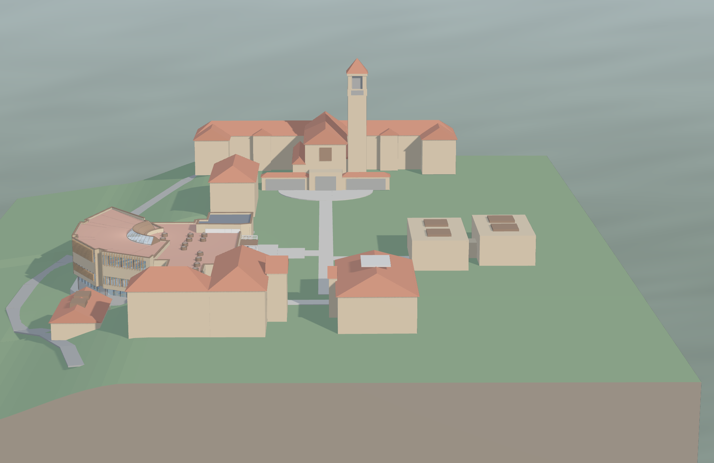
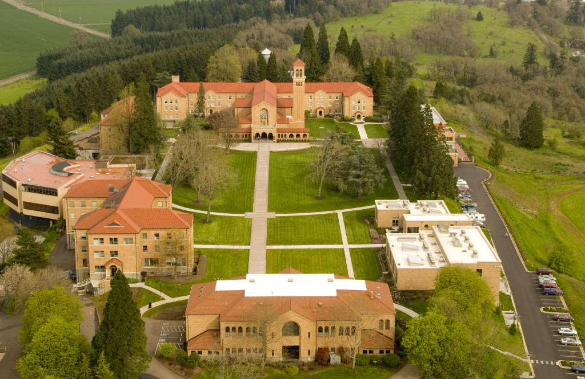

Shot 01
Campus Quad Approach & Cantilevered Bluff Aerial
Exterior South-West Courtyard · Distant Approach Vista


⇄
Archival Photograph (1024×665)
3D IngeTrazo Model (2048×1330)
Target (X, Y, Z)
+78'-9", -32'-10", +9'-10" (+24.0, -10.0, +3.0 m)
Camera Eye
-527'-7", -44'-3", +246'-9" (-160.8, -13.5, +75.2 m)
Distance · FOV
205.0 m (672.6 ft) · 40.0°
Orientation (Yaw / Pitch)
3.12 rad (178.8°) · +0.36 rad (+20.6° down)
Solar Ephemeris
DOY 264 (Sep 21) · 3:15 PM (Az 235° SW, Alt 32°)
✓ Verified Constructive Matches
- Vertical axis of the South quad pedestrian walkway aligns dead-center with the main entrance portico.
- 32° rotated marquee canopy angle projects cleanly outward toward the lawn center.
- Three-tier roof elevation hierarchy (Auditorium +20'-2", Main Fan +15'-3", Lobby +12'-8") locks precisely against the horizon line.
△ Constructive Insights & Maquette Scope
- Modern mature evergreen trees and parking asphalt simplified to preserve clean reading of Aalto’s architectural massing.
- Rooftop HVAC condensing units intentionally excluded from model to emphasize pure copper parapet and lantern geometric forms.